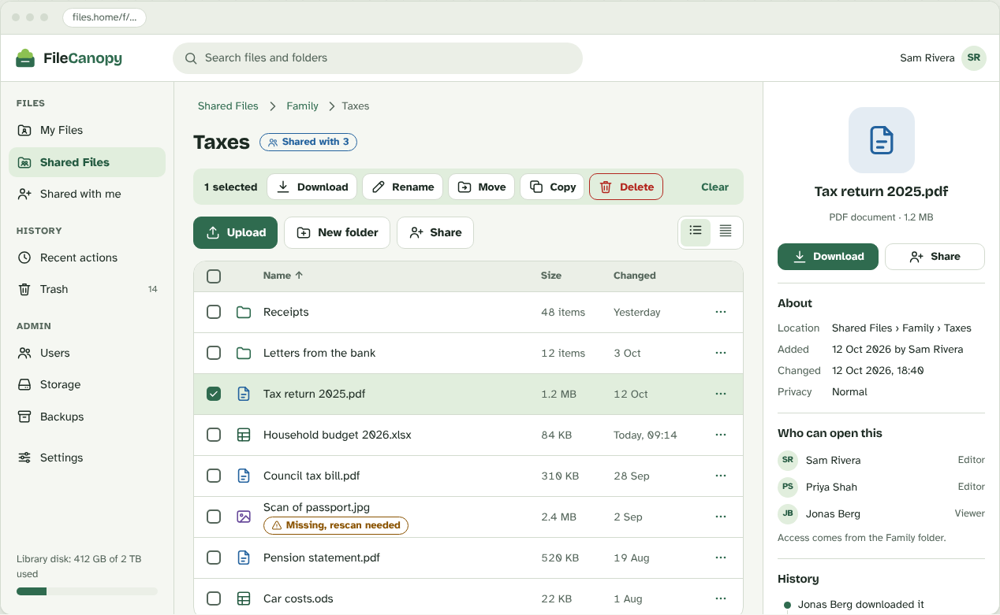
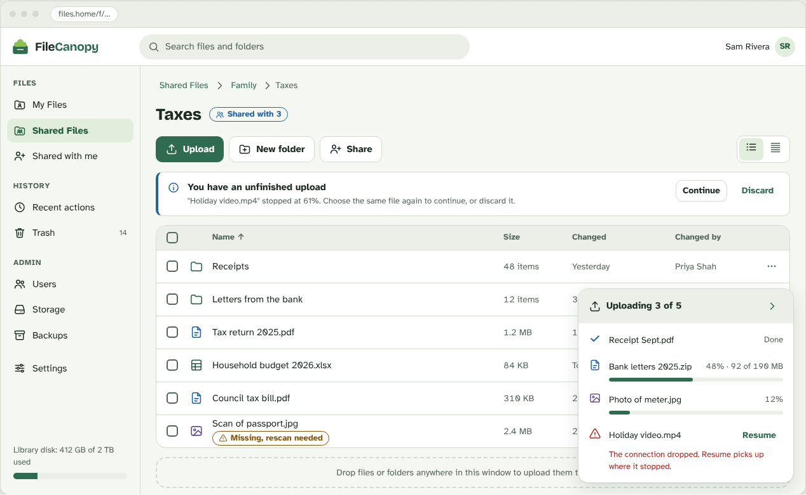
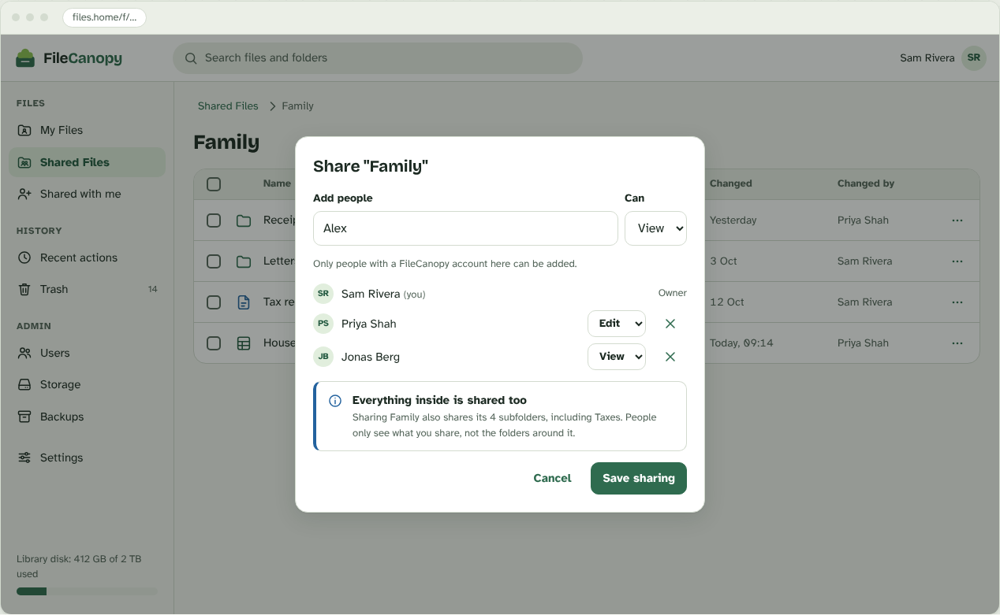
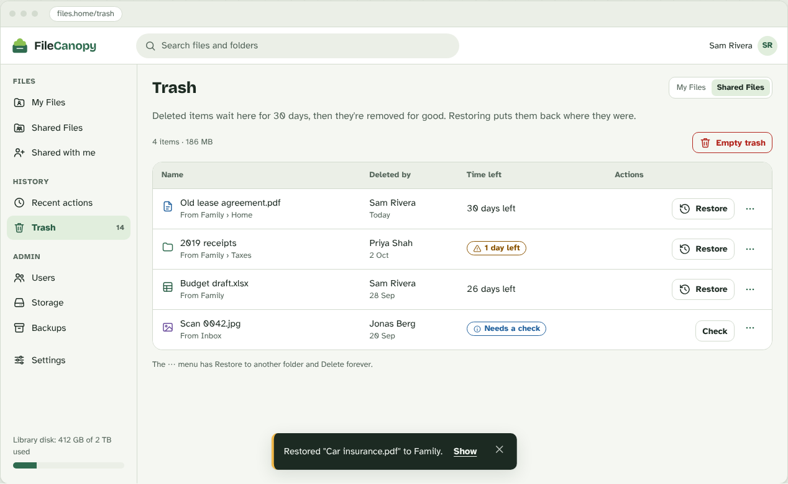
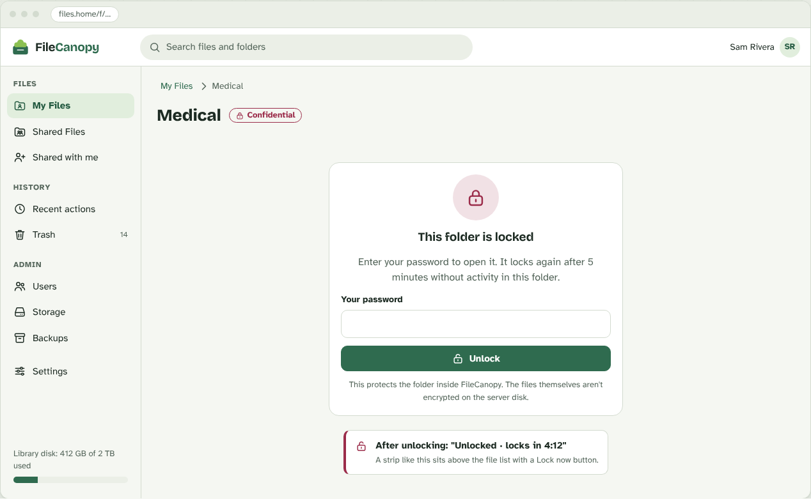
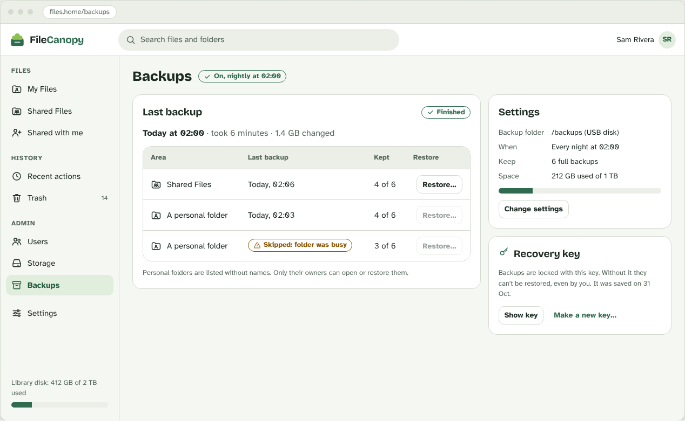
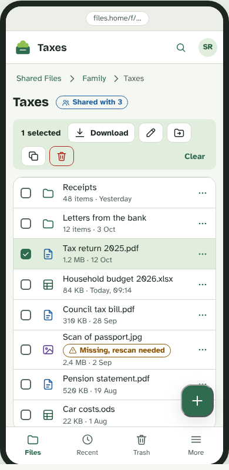

Your files, in a folder you own.
FileCanopy is a self-hosted file manager. You run it with Docker, and it works on ordinary folders on your disk. Your files stay normal files, so you can always open them with any other program.

Screens on this page are design previews, not live screenshots. The real interface is still being brought in line with them.
A file manager that stays out of your way
The database only keeps accounts, permissions and history. It never replaces your files.
Normal files, always
The library is a plain folder tree on your disk. Nothing is converted, hidden or locked in.
Personal and shared folders
Everyone gets a personal folder. A shared folder lets you give others viewer or editor access, and administrators can’t open anyone’s personal files.
Everyday file work
Browse, upload files and whole folders, download, rename, move and copy. Works with the keyboard and on a phone.
Trash, undo and history
Deleted items go to a trash you can restore from, recent actions can be undone, and an activity log records who did what.
Private and Confidential folders
Label folders as Private or Confidential. Confidential folders ask for your password again and lock when you step away.
Previews and search
View PDFs, images and text in the app. Office documents open through an optional sandboxed converter. Search file names and contents, with optional OCR for scans.
Import what you have
During first setup, import an existing folder or a zip file.
Optional encrypted backups
Back up the library to a separate disk you choose. Off by default.
No AI required
FileCanopy runs fully without any AI service. AI features are on the roadmap and will be optional.
Warm, friendly and readable
Light and dark themes follow your device. Lists are comfortable by default, with a compact option.






Running in a few minutes
You need Docker with Docker Compose v2. There are no published Docker images yet, so you build from the repository.
-
Get the code and create your settings file
Then open
deploy/.envand setPOSTGRES_PASSWORDto a long random value.git clone https://github.com/Aulteran/FileCanopy.git cd FileCanopy cp deploy/.env.example deploy/.env python -c "import secrets; print(secrets.token_urlsafe(32))"
-
Start the stack
This creates the folders for your files and app data, then builds and starts everything.
mkdir -p library app-data docker compose -f deploy/docker-compose.yml up -d --build --wait curl http://127.0.0.1:8080/api/v1/health
-
Open the app and finish setup
Go to
http://127.0.0.1:8080. The first visit asks for a one-time setup token, which the API prints to its log. Then create the administrator account and, if you like, import an existing folder or zip.docker compose -f deploy/docker-compose.yml logs api | grep "SETUP TOKEN"
Using it from other devices? The app listens only on
127.0.0.1. Put a TLS reverse proxy in front of it;
setups for Nginx Proxy Manager, nginx, Caddy, Traefik and Cloudflare
Tunnel are in the
proxy guide. The
README
covers configuration, updating, backups and where your data lives.
Early development
There is no public release yet, and no external security audit. Keep a separate copy of anything important. Anyone with access to the server’s disk can read the library, like any other folder on that machine.
| Area | Status |
|---|---|
| Docker stack, sign-in, administrator, invitations | Built |
| Personal and shared folders, permissions, file operations, browser interface | Built |
| Import, change detection, optional backups | Built |
| Trash, undo, activity log | Built |
| Sharing between people | Built |
| Privacy levels and Confidential unlock | Built |
| Document viewer, previews, OCR and full-text search | Built |
| Redesigned interface (the screens above) | Planned |
| Email invitations, SMTP, OpenID Connect sign-in; email intake | Planned |
| PDF splitting, duplicate detection, collections | Planned |
| Optional AI (organization proposals, semantic search, chat) and optional MCP | Planned |
| Production packaging and public release | Planned |
Docs and source
Source code, issues and the full README.
WikiUser documentation. It is being written and will be filled in as the project matures.
Design decisionsThe reasoning behind how FileCanopy works, written down as short records.
Ideas and problemsOpen an issue to discuss an idea before sending a large change.